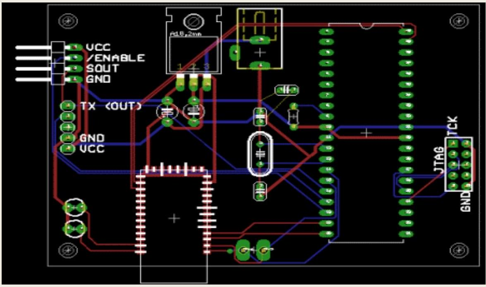
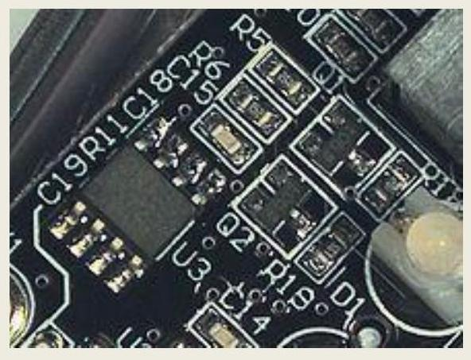

CHAPTER -7. PRINTED CIRCUIT BOARD (PCB).
7.1 Discuss the different types of PCB : single sided double sided multi layer Different types of PCB:
1)Breadboard
This is a way of making a temporary circuit, for testing purposes or to try out an idea. No soldering is required and all the components can be re-used afterwards. It is easy to change connections and replace components.
Fig 2. Breadboard
2)Stripboard
Permanent, soldered
Stripboard has parallel strips of copper track on one side. The strips are 0.1" (2.54mm) apart and there are holes every 0.1" (2.54mm). It can be cut with a junior hacksaw, or simply snap it along the lines of holes by putting it over the edge of a bench or table and pushing hard.
Fig 3 . Stripboard
3)Printed Circuit Board
Permanent, soldered
Printed circuit boards have copper tracks connecting the holes where the components are placed. They are designed specially for each circuit and make construction very easy.
PCB
Fig 4
SMD : (Surface mount Components):
Surface mount technology (SMT) is a method for constructing electronic circuits in which the components (SMC, or Surface Mounted Components) are mounted directly onto the surface of printed circuit board (PCBs). Electronic devices so made are called surface mount devices or SMDs. In the industry it has largely replaced the throgh hole technology construction method of fitting components with wire leads into holes in the circuit board.
Surface Mount Capacitor. Surface-mount components on a USB flash drive's circuit board. The small rectangular chips with numbers are resistors, while the unmarked small rectangular chips are capacitors. The capacitors and resistors pictured are 0603 (1608 metric) package sizes, along with a very slightly larger 0805 (2012 metric) ferrite bead. Not shown here, even smaller chip capacitors are 0402 (1005 metric) and 0201 (0603 metric) sizes
7.2 Explain the PCB design principle (Brief description): The schematic Diagram, Layout design,
A printed circuit board (PCB) mechanically supports and electrically connects electronic components using conductive tracks, pads and other features etched from copper sheets laminated onto a non-conductive substrate. PCBs can be single sided (one copper layer), double sided (two copper layers) or multi-layer. Conductors on different layers are connected with plated-through holes called vias. Advanced PCBs may contain components - capacitors, resistors or active devices - embedded in the substrate.
Printed circuit boards are used in all but the simplest electronic products. Alternatives to PCBs include wire wrap and point-to-point construction. PCBs require the additional design effort to lay out the circuit but manufacturing and assembly can be automated. Manufacturing circuits with PCBs is cheaper and faster than with other wiring methods as components are mounted and wired with one single part. Furthermore, operator wiring errors are eliminated.
When the board has only copper connections and no embedded components, it is more correctly called a printed wiring board (PWB) or etched wiring board. Although more accurate, the term printed wiring board has fallen into disuse. A PCB populated with electronic components is called a printed circuit assembly (PCA), printed circuit board assembly or PCB assembly (PCBA).
PCB design process
Preparing the board layout
Now it's time to draw the board. You need to transfer your schematic diagram into a drawing of your printed circuit board.
Drawing PCB's is artwork. Take your time, and make sure it looks good. Follow the design guidelines for drawing circuit boards.
Most PCB software will have tools that will help you draw your board from the schematic. I can't cover them all, but I've written a PCB design tutorial for Eagle to help you learn.
Artwork, Manufacturing of film master.
7.3 Explain PCB fabrication procedure (Brief description): Cutting of PCB, Cleaning, Lamination, Exposing, Developing, Etching, Drilling, Solder Max, Tinning, Legend Printing and Finishin
Patterning (etching)
The vast majority of printed circuit boards are made by bonding a layer of copper over the entire substrate, sometimes on both sides, (creating a "blank PCB") then removing unwanted copper after applying a temporary mask (e.g. by etching), leaving only the desired copper traces. A few PCBs are made by adding traces to the bare substrate (or a substrate with a very thin layer of copper) usually by a complex process of multiple electroplating steps. The PCB manufacturing method primarily depends on whether it is for production volume or sample/prototype quantities. PCB milling uses a two or three- axis mechanical milling system to mill away the copper foil from the substrate. A PCB milling machine (referred to as a 'PCB Prototyper') operates in a similar way to a plotter, receiving commands from the host software that control the position of the milling head in the x, y, and (if relevant) z axis. Data to drive the Prototyper is extracted from files generated in PCB design software and stored in HPGL or Gerber file format.
Etching
Chemical etching is done with ferric chloride, ammonium persulfate, or sometimes hydrochloric acid.For PTH (plated-through holes), additional steps of electroless deposition are done after the holes are drilled, then copper is electroplated to build up the thickness, the boards are screened, and plated with tin/lead. The tin/lead becomes the resist leaving the bare copper to be etched away.
Lamination
Some PCBs have trace layers inside the PCB and are called multi-layer PCBs. These are formed by bonding together separately etched thin boards.
Drilling
Holes through a PCB are typically drilled with tiny drill bits made of solid tungsten carbide. The drilling is performed by automated drilling machines with placement controlled by a drill tape or drill file. These computer-generated files are also called numerically controlled drill (NCD) files or "Excellon files". The drill file describes the location and size of each drilled hole. These holes are often filled with annular rings (hollow rivets) to create vias. Vias allow the electrical and thermal connection of conductors on opposite sides of the PCB.Most common laminate is epoxy filled fiberglass. Drill bit wear is partly due to embedded glass, which is harder than steel. High drill speed necessary for cost effective drilling of hundreds of holes per board causes very high temperatures at the drill bit tip, and high temperatures (400-700 degrees) soften steel and decompose (oxidize) laminate filler. Copper is softer than epoxy and interior conductors may suffer.
Damage during drilling : When very small vias are required, drilling with mechanical bits is costly because of high rates of wear and breakage. In this case, the vias may be evaporated by lasers. Laser-drilled vias typically have an inferior surface finish inside the hole. These holes are called micro vias.lt is also possible with controlled-depth drilling, laser drilling, or by pre-drilling the individual sheets of the PCB before lamination, to produce holes that connect only some of the copper layers, rather than passing through the entire board. These holes are called blind vias when they connect an internal copper layer to an outer layer, or buried vias when they connect two or more internal copper layers and no outer layers. The walls of the holes, for boards with 2 or more layers, are made conductive then plated with copper to form plated-through holes that electrically connect the conducting layers of the PCB. For multilayer boards, those with 4 layers or more, drilling typically produces a smear of the high temperature decomposition products of bonding agent in the laminate system. Before the holes can be plated through, this smear must be removed by a chemical desmear process, or by plasma-etch. Removing(etching back) the smear also reveals the interior conductors as well.
Exposed conductor plating and coating :
PCBs are plated with solder, tin, or gold over nickel as a resist for etching away the unneeded underlying copper.After PCBs are etched and then rinsed with water, the soldermask is applied, and then any exposed copper is coated with solder, nickel/gold, or some other anticorrosion coating. Matte solder is usually fused to provide a better bonding surface or stripped to bare copper. Treatments, such as benzimidazolethiol, prevent surface oxidation of bare copper. The places to which components will be mounted are typically plated, because untreated bare copper oxidizes quickly, and therefore is not readily solderable. Traditionally, any exposed copper was coated with solder by Hot air solder levelling (HASL). This solder was a tin-lead alloy, however new solder compounds are now used to achieve compliance with the RoHS directive in the EU and US, which restricts the use of lead. One of these lead-free compounds is SN100CL, made up of 99.3% tin, 0.7% copper, 0.05% nickel, and a nominal of 60 ppm germanium.It is important to use solder compatible with both the PCB and the parts used. An example is Ball Grid Array (BGA) using tin-lead solder balls for connections losing their balls on bare copper traces or using lead-free solder paste. Other platings used are OSP (organic surface protectant), immersion silver (IAg), immersion tin, electroless nickel with immersion gold coating (ENIG), and direct gold plating (over nickel). Edge connectors, placed along one edge of some boards, are often nickel plated then gold plated. Another coating consideration is rapid diffusion of coating metal into Tin solder. Tin forms intermetallics such as Cu5Sn6 and Ag 3 Cu that dissolve into the Tin liquidus or solidus(@50C), stripping surface coating and/or leaving voids. Electrochemical migration (ECM) is the growth of conductive metal filaments on or in a printed circuit board (PCB) under the influence of a DC voltage bias. Silver, zinc, and aluminum are known to grow whiskers under the influence of an electric field. Silver also grows conducting surface paths in the presence of halide and other ions, making it a poor choice for electronics use. Tin will grow "whiskers" due to tension in the plated surface. Tin-Lead or Solder plating also grows whiskers, only reduced by the percentage Tin replaced. Reflow to melt solder or tin plate to relieve surface stress lowers whisker incidence. Another coating issue is tin pest, the transformation of tin to a powdery allotrope at low temperature.
Solder resist :
Areas that should not be soldered may be covered with a polymer solder resist (solder mask) coating. The solder resist prevents solder from bridging between conductors and creating short circuits. Solder resist also provides some protection from the environment. Solder resist is typically 20-30 micrometres thick
Printed circuit assembly :
After the printed circuit board (PCB) is completed, electronic components must be attached to form a functional printed circuit assembly, or PCA (sometimes called a "printed circuit board assembly" PCBA). In through-hole construction, component leads are inserted in holes. In surface-mount construction, the components are placed on pads or lands on the outer surfaces of the PCB. In both kinds of construction, component leads are electrically and mechanically fixed to the board with a molten metal solder. There are a variety of soldering techniques used to attach components to a PCB. High volume production is usually done with machine placement and bulk wave soldering or reflow ovens, but skilled technicians are able to solder very tiny parts (for instance 0201 packages which are 0.02 in . by 0.01 in .) by hand under a microscope, using tweezers and a fine tip soldering iron for small volume prototypes. Some parts are impossible to solder by hand, such as ball grid array (BGA) packages. Often, through-hole and surface-mount construction must be combined in a single assembly because some required components are available only in surface-mount packages, while others are available only in through-hole packages. Another reason to use both methods is that through-hole mounting can provide needed strength for components likely to endure physical stress, while components that are expected to go untouched will take up less space using surface-mount techniques. After the board has been populated it may be tested in a variety of ways: While the power is off, visual inspection, automated optical inspection. JEDEC guidelines for PCB component placement, soldering, and inspection are commonly used to maintain quality control in this stage of PCB manufacturing. While the power is off, analog signature analysis, power-off testing. While the power is on, incircuit test, where physical measurements (i.e. voltage, frequency) can be done. While the power is on, functional test, just checking if the PCB does what it had been designed for.To facilitate these tests, PCBs may be designed with extra pads to make temporary connections.Sometimes these pads must be isolated with resistors. The in-circuit test may also exercise boundary scan test features of some components. In-circuit test systems may also be used to program nonvolatile memory components on the board.In boundary scan testing, test circuits integrated into various ICs on the board form temporary connections between the PCB traces to test that the ICs are mounted correctly. Boundary scan testing requires that all the ICs to be tested use a standard test configuration procedure, the most common one being the Joint Test Action Group (JTAG) standard. When boards fail the test, technicians may desolder and replace failed components, a task known as rework.
Surface Mount Technology
Fig-1
Surface mount components, including resistors_, an integrated circuit & Transistor
Surface-mount technology emerged in the 1960s, gained momentum in the early 1980s and became widely used by the mid 1990s.Components were mechanically redesigned to have small metal tabs or end caps that could be soldered directly on to the PCB surface. Components became much smaller and component placement on both sides of the board became more common than with through-hole mounting, allowing much higher circuit densities. Surface mounting lends itself well to a high degree of automation, reducing labour costs and greatly increasing production and quality rates. Carrier Tapes provide a stable and protective environment for Surface mount devices (SMDs) which can be one-quarter to one-tenth of the size and weight, and passive components can be one-half to one-quarter of the cost of corresponding through-hole parts. However, integrated circuits are often priced the same regardless of the package type, because the chip itself is the most expensive part. As of 2006, some wire-ended components, such as smallsignal switch diodes are actually significantly cheaper than corresponding SMD versions.